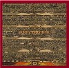
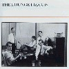

strange music page
overseas * * * knitting factory
#N.Y.に有るライヴハウスです。
その筋では有名みたいで、フツーじゃない人達がよってたかって演奏してます。
John Zorn,Tom Cora,Elliot Sharp,Zeena Parkins,Doctor Nerve,Marc Ribot,Fred Frithなどなどなどなど
|
- v.a.
- John Zorn
- Naked City
- Painkiller
- Massacre
- The Lounge Lizards
- Elliot Sharp
- Elliot Sharp & Zeena Parkins
- X-Legged Sally
- A Group
- Doctor Nerve
|
#5枚組みのKnitting Factoryのライヴオムニバス。結構昔買いました、その頃はピンと来なくって、vol.2とvol.5は売っちゃいました、今になってすげー後悔してます。
このvol.1はやっぱりCurlewとあとBrand-XのPercy Jonesの入っているScannersが格好良いです。
- Curlew/Croix
- Pippin Barnett (drums)
- George Cartwright (sax)
- Tom Cora (cello)
- Ann Rupel (bass)
- Davey Williams (guitars)
- Bosho/Atsui Yoru No Kawa
- Samm Bennett (electronic percussion)
- David Fulton (guitars)
- Yuval Gabay (drums)
- Kimoto Kumiko (vocals,percussions)
- Kyle Sims (bass)
- Jazz Passengers/Decomposet by a Neck
- Curtis Fowlkes (trombone)
- Brad Jones (bass)
- Roy Nathanson (sax)
- Jim Nolet (violin)
- Marc Ribot (guitars)
- E.J.Rodriguez (drums)
- Bill Ware (vibes)
- M.Dresser, M.Feldman, N.Cline/Harkening
- Nels Cline (guitars)
- Mark Dresser (bass)
- Mark Feldman (violin)
- Jazz Passengers/Spirits of Flatbush - Angels Eyes
- Scanners/Ironcide
- Percy Jones (bass)
- David Linton (drums)
- Elliot Sharp (guitars)
- Miracle Room/Open Heart
- Ed Greer (bass)
- Steven Marsh (guitars,vocals)
- Rock Savage (percussions)
- Curlew/The Hard Wood
- Hansundtom/Angel-Carver Blues
- Tom Cora (cello)
- Hans Reichel (guitars)
- Alva Rogers/Pizza Party
- Charles Burnham (vocals,percussions)
- Alva Rogers (vocals)
- Brandon Ross (guitars,vocals)
produced by Robert Appel
A&M RECORDS: CD5242 (1989)
#そんなわけでvol.3なんですが、まずやっぱりDoctor Nerveですね、N.Didkovsky(来日したときもP.O.Nと一緒にやった時に見た)のギターが格好良いです、格好良いアバンギャルドの見本みたいな。
あとは、Slan(J.Zorn/E.Sharp)もスピード感有って格好良いですね、今気づいたんですけどArto Lindsayなんかも参加してたんですね。
- Doctor Nerve/Nothing You Can Do Hurt Me
- Nick Didkovsky (guitars)
- Greg Anderson (bass)
- Leo Ciesa (drums)
- Dave Douglas (trumpet)
- Yves Duboin (soprano sax)
- Rob Henke (trumpet )
- Michael Lytle (bass clarinet)
- Marc Wagnon (vibes)
- No Safety/Discuss It
- Chris Cochrane (guitars,vocals)
- Zeena Parkins (accordion)
- Ann Rupel (bass)
- Doug Seidel (guitars)
- Tim Spelios (drums)
- Gentle, Safe and Natural/Bruxa
- Arto Lindsay (guitars,vocals)
- Melvin Gibbs (bass)
- Dougie Bowne (drums)
- The Thomas Chapin Trio/Insomnia
- Thomas Chapin (alto sax)
- Steve Johns (drums)
- Mario Pavone (bass)
- Negativland/You Must Choose
- Chris Grigg
- Mark Hosler
- Don Joyce
- Brandon Ross' The Overflow/The Ugly Waiter
- Brandon Ross (guitars)
- Melvin Gibbs (bass)
- Don Byron (clarinet)
- Dougie Bowne (drums)
- Sadiq Bey (percussions)
- Don Byron Plays The Music of Mickey Katz/The Wedding Dance
- Don Byron (clarinet)
- Mark Feldman (violin)
- J.D. Parran (clarinet)
- Tony Barrero (trumpet)
- Alfred Patterson (trombone)
- Uri Caine (piano)
- Mark Dresser (bass)
- Richie Schwarz (drums)
- Loren Skalamberg (percussions)
- Marilyn Crispell & Andrew Cyrille Duet/Notability
- Marilyn Crspell (piano)
- Andrew Cyrille (drums)
- Slan/Rictus
- Slan/Z.O.G.
- John Zorn (alto sax)
- Elliot Sharp (doubleneck guitarbass)
- Ted Epstein (drums)
- No Safety/Oh No
- Brandon Ross The Overflow/Kandinsky
produced by Robert Appel
A&M RECORDS: 75021-5299-2 (1990)
- Ned Rothenberg Double Band/Rai-Hop
- Jorome Harris (bass)
- Gregory Jones (bass)
- Pheeroan akLaff (drums,percussions)
- Samm Bennett (drums,percussions)
- Thomas Chapin (alto sax)
- Ned Rothenberg (alto sax)
- Universal Congress of/Freight Train
- Joe Biaza (guitars,vocals)
- Steve Moss (tenor sax,backing vocals)
- Bob Fitzer (bass)
- Paul Lyons (drums)
- Last Exit/The Sprawl
- Peter Brotzman (reeds)
- Ronald Shannon jackson (drums)
- Bill Laswell (bass)
- Sonny Sharrock (guitars)
- Iva Bittova & Pavel Fajt/Strom
- Iva Bittova (violin,voice)
- Pavel Fajt (drums,metals)
- Framework/Erghen Diado
- Erik Friedlander (cello)
- Kevin Norton (drums,samples)
- Laura seaton (violin)
- Spanish Fly/Cave Man
- Steven Bernstein (cornet,slide trumpet)
- Marcus Rojas (tuba)
- Dave Tronzo (slide guitar)
- Miniature/Jersey Devil
- Joey Baron (drums,electronics)
- Tim Berne (alto sax)
- Hank Roberts (vocals,cello)
- X-Legged Sally/Fast Forward
- Peter Vermeersch (tenor sax)
- Eric Sleichim (alto sax)
- Michel Mast (baritone sax)
- Jan Weuts (trumpet)
- Pieter Lamotte (trombone)
- Michel Delorie (guitars)
- Bruno Deneuter (bass)
- Danny van Hoeck (drums)
- Bob Holman/1990
- New & Used/Farm Life
- Dave Douglas (trumpet)
- Kermit Driscoll (bass)
- Mark Feldman (violin)
- Andy Laster (reeds)
- Tom Rainey (drums)
produced by Robert Appel
A&M RECORDS: 75021-5332-2 (1990)
- Batman
- The Sicillian Clan
- You Will Be Shot
- Latin Quarter
- A Shot In The Dark
- Reanimator
- Snagglepuss
- I Want To Love
- Lonely Woman
- Igneours Ejaculation
- Blood Duster
- Hammerhead
- Deamon Sanctuary
- Obeah Man
- Ujaku
- Fuck The Facts
- Speedball
- Chinato
- Punk China Doll
- N.Y. Flat Top Box
- Saigon Pickup
- The James Bond Theme
- Den of Sins
- Contempt
- Graveyard Shift
- Inside Starlight
- John Zorn (alto sax)
- Bill Frisell (guitars)
- Wayne Horitz (keyboards)
- Fred Frith (bass)
- Joey Baron (drums)
- Yamatsuka EYE (vocals)
- Shetetl (Ghetto Life)
- Never Again
- Gahelet (Embers)
- Tikkun (Rectification)
- Tzfia (Looking Ahead)
- Barzel (Iron Fist)
- Gariin (Nucleus - The New Settlement)
- Mark Feldman (violin)
- Marc Ribot (guitars)
- Anthony Coleman (keyboards)
- Mark Dresser (bass)
- William Winant (percussions)
- David Krakauer (clarinet,bass clarinet on 1.5.)
- Frank London (trumpet on 1.5.)
eva records: WWCX-2050 (1993)
- blue
- yellow
- pink
- black
- Barbara Caffe (alto flute,bass flute)
- David Abel (viola)
- Scummy (guitars)
- David Shea (turntables)
- David Slusser (sound effects)
- William Winant (percussions)
- Mike Patton (voice)
eva records: WWCX-2040 (1992)
#J.Zornの映画音楽集....といっても馴染みの無いタイトルが並びますけど。
ネイキッドシティとかソロ作みたいに異常に濃いかったり、悲惨だったりはしないので。
WHITE AND LAZY (1986)
- Main Title
- Homecoming
- The Heist
- Meat Dream
- Phone Call
- End Title
- Robert Quine (guitars)
- Arto Lindsay (guitars,vocals)
- Melvin Gibbs (bass)
- Anton Fier (drums)
- Carol Emanuel (harp)
- David Wainstein (keyboards)
- Ned Rothernberg (bass clarinet)
THE GOLDEN BOAT (1990)
- Fanfare
- Theme
- Jazz I
- Horror Organ
- Mexico
- Mood
- Rockabilly
- Slow
- Jazz Oboes
- The Golden Boat (Turntalbe Mix)
- End Titles
- Vicki Bodner (oboe)
- John Zorn (alto sax)
- Robert Quine (guitars)
- Anthony Coleman (keyboards)
- Carol Emanuel (harp)
- David Shea (truntable,vocals)
- Mark Dresser (bass)
- Ciro Baptista (brazilian percussion)
- Robert Previte (drums,marimba)
THE GOOD, THE BAD AND THE UGLY (1987)
- The Good, The Bad and The Ugly
- Robert Quine (guitars)
- Bil Frisell (guitars)
- Fred Frith (bass)
- Wayne Horvitz (hammond organ)
- David Weinstein (keyboards)
- Carol Emanuel (harp)
- Robert Previte (drums,percussions,vocals)
SHE MUST BE SEEING THE THINGS (1986)
- Main Title
- Swirling Shot
- Homecoming
- Catalina Flash
- Seduction
- Sex Shop Boogaloo
- Catalina Escape
- Worms
- Death Waltz Fantasy
- Following Sequence
- Movie Set
- Climax
- Going To Dinner
- End Title
- Shelley Harsch (voice)
- John Zorn (alto sax)
- Marty Ehrlich (tenor sax,clarinet)
- Tom Varner (french horn)
- Jim Staley (trombone)
- Bill Frisell (guitars)
- Carol Emanuel (harp)
- Anthony Coleman (piano,organ,celeste,harpsichord)
- Wayne Horvitz (hammond organ,piano,DX7)
- David Weinstein (mirage,CZ101)
- David Hofstra (bass)
- Nana Vasconcelos (brazilian percussion)
- Robert Previte (drums,percussions,vibes,timpani,orchestra bells)
TZADIK: TZ-7314 (1997)
- Blood is Thin (血が薄い)
- Demon Sanctuary (魔の聖域)
- Thrash Jazz Assassin
- Dead Spot (死角)
- Bonehead
- Speedball
- Blood Duster
- Pile Driver
- Shangkuan Ling-feng (上官靈鳳)
- Numbskull
- Perfume of A Critic's Burning Flesh (評論家を燃やせ - いい匂いさ)
- Jazz Snob Eat Shit
- The Prestidigitator (奇術師)
- No Reason To Believe (信じられるわけがない)
- Hellraiser
- Torture Garden (拷問天国)
- Slan
- Hammerhead
- The Ways Of Pain (痛めつける)
- The Noose (絆)
- Sack of shit
- Blunt Instrument (鈍器)
- Osaka bondage
- Igneous Ejaculation (火の絶叫)
- Shallow Grave (浅い墓)
- 雨雀 (Ujaku)
- かおる
- Dead Dread
- Billy Liar (嘘つきビリー)
- Victims of Tortune (拷問の犠牲者)
- speedfreaks
- new jersey scum swamp
- S & M Sniper
- Pigfucker (豚姦)
- cairo chop shop
- Fuck The Facts
- Obeah man
- Facelifter
- N.Y. Flat Top Box
- Whiplash (むちうち)
- The Blade (刃)
- Gob Of Spit (痰のかたまり)
- John Zorn (saxes,vocals)
- Bill Frisell (guitars)
- Wayne Horvitz (keyboards)
- Fred Frith (bass)
- Joey Baron (drums,percussions)
- Yamatsuka eye (vocals)
Toy's Factory: TFCK-88557 (1991)
First Set:
- Sound check
- First blood
- Five doors
- Cinnabar
- Pestilence
- The Hex
- Snake eyes
- Poisonous Visions
- Vapors of Phlegm and Blood
- Tetragrammaton
Second Set:
- Prophecy
- Taantric Bile
- The Sieve
- Abcesses
- Cat's Cradle
- Demonic Posession
- Tokyo Lucky Hole
- John Zorn (sax)
- Bill Laswell (bass)
- Mick Harris (drums,percussions)
- 灰野敬二 (guitars,voice)
Toy's Factory: TFCK-88627 (1993)

- Leaf Violence
- Down to Five a Day
- Lizard-skin Junk-mail
- Ladder
- South Orange Sunset
- Six-Cylinder Sinister
- 300 Days in the Vacant Lot
- Say Hey Willie
- Talk Radio
- Well-dressed Ripping Up Wood
- Further Conversations with White Arc
- Fred Frith (guitars)
- Bill Laswell (bass)
- Charles Hayward (drums)
TZADIK: TZ-7601 (1998)
#高校生の頃聴いた時はあまり良さが分からなかったです、J.ZornとかKnitting Factoryとか聴いてた頃は何故か手を伸ばさずにいたラウンジリザーズです。たまに
フライングリザーズ（David Cunninghamのいるやつ）とごっちゃになっちゃうんですけど。
Naked City程の濃密さは無いですけど、それに繋がる元のよーな音が鳴ってます。アートリンゼイのギターは「ピキョパキョ」いってるし、キーボードも変態な音してて。ウソジャズというか変態ジャズのはしりかなー？81年作、でも変態度もクオリティも最近の変態ジャズに負けてないです。
amazon試聴(2002.1.30)

- Incident on South Street
- Harlem Nocturne
- Do The Wrong Thing
- Au Contraire Arto
- Well You Needn't
- Ballad
- Wangling
- Conquest of Rar
- Demented
- I Remember Coney Island
- Fatty Walks
- Epistrophy
- You Haunt Me
- John Lurie (sax)
- Evan Lurie (keyboards)
- Steve Piccolo (bass)
- Arto Lindsay (guitars)
- Anton Fier (drums)
EG RECORDS: EEGCD-8 (1981)
- Singularity
- Squig
- Diffractal
- Trubulence
- Dusts
- Lacunar
- Not-Yet-Time
- Elliot Sharp (guitars,bass,trombone,pantar,slab,tubinets,violinoid)
- Robert Previte (drums)
- Charles K.Noyes (drums,saw)
- Katie O'Looney (pantar,slab)
- Ken Heer (trombone)
DOSSIER RECORDS: DOSSIER-ST-7515 (1986)
- spez
- insomnia
- pinball logic
- shotput
- statespace
- zeps
imitations of life:
- elmer
- elsie
- lynx
- horseshoe
- programinals
- creeper reaper
- sambar
- daisy world
- hiroshima heart attack
- minima moralia
- stroll avoid align
- world fail
- Elliott Sharp (guitars,bass,percussion,clarinet,dobro)
- Zeena Parkins (harps,percussions)
VICTO: victo-cd-026 (1994)
#そしてこれも新宿disk unionにて\300、とってもとってもお買い得。やっぱある程度の需要以上は全く売れなくなっちゃうんでしょうかね、この手のCDは。
これは1stと2ndのカップリング。Doctor Nerveちゅーバンドは、ギターのN.Didkovskyさんのバンドで、彼がHMSL(Hierarchical Music Specification Language: 階層的音楽記述言語)という言語で作曲した音楽を演奏してるバンドらしいです。HMSLがどんなものかは知らないのですけど、内容的には理系アバンギャルド・ジャズって感じですかね。
17曲目以降が自主製作による1stアルバムです。1曲目から16曲目までが2ndで、Fred Frithのプロデュースらしいです。(1999.7.10)
Armed Observation
- Out To Bomb Fresh Kings
- Mister Stiff Fires A Dozen
- Sister Cancer Brother Dollar
- I Am Not Dumb Now
- Keine Jazz Platte
- Don't Be A Hog
- Not Everyone's As RIch As Your
- Electric Guitar Solo
Three Curiously Insubstantial Duets:
- I
- II
- III
- Portland Applaunds the Radio
- Atypical Tiple
- Wir Sind Dickhauter
- Don't Worry Do
- "That is when they start to have their own way that is when they start to get out of hand"
Out To Bomb Fresh Kings
- Mink Shadows
- Unna
- It's A Tincture
- Spy Boy
- Spy Pie
- Souls Of The Rich
- Nothing You Can Do Hurt Me
- A Hummer In His Hand
- A God That Can Dance
- Personnel Dept.
- Doctor Nerve
- Nick Didkovsky (guitars)
- Yves Duboin (sporano sax on 1-4.6.7.9.10.11.14-18.21.23-25.27.)
- Michael Lytle (bass clarinet on 1-4.6..7.14-18.21.27.)
- Samm Bennett (percussions on 15.)
- Doug Brown (bass on 20.)
- Anne Brudevold (violin on 16.22-25.)
- Lucian Burg (sax on 20.)
- Brian Curter (drums on 20.)
- Don Davis (tenor sax on 17.18.21.27)
- Dave Douglas (trumpet on 1-4.7.14-16.)(piano on 16.)
- Brian Farmer (drums on 22-25.)
- Mike Leslie (bass on 1.2.4.15.17.18.21.27.)
- Bill Lippencott (sax on 20.)
- Joachim Litty (sax on 23-25.)
- Steve MacLean (bass on 23-25.)
- James Mussen (drums on 1-7.14-19.21.27.)
- Kyle Sims (bass on 2.6.7.14.16.)
- Marc Wagnon (vibraphone on 1-4.7.14.16-18.21.27.)(percussions on 15.)(piano on 6.)
- Chuck Verstraeten (trombone on 23-25.)
Arcangelo: ARC-1006 (original released 1984,1987 Cueniform Records: RUNE-38X)
#新宿ディスクユニオンにて、\300。オイオイオイそりゃねーだろーといったお値段。
まぁ自分にとっては有難いですけどねー、Arcangeloでリリースするモノって売れないと物凄い値段まで落ちますね。Muffinsなんて定価で買っちゃったのに今日見たら\800だった、なんか損した気分。
でも何枚国内盤扱いで入れてるんですかね？そんなに売れるとでも思ったんでしょうかね、確かに内容良いですけど。(1999.7.10)
- Nerveware No.8 (performed by New Ear)
- Splinter
- Money Where Your Mainz Is
- Wir Sind Dickhauter
- Where Mainz Your Unna
- Unnas Rumpus
- Sister Cancer Brother Dollar
- Armed Observation
- Nerveware No.3
- Preaching To The Converted (performed by Isso Yukihiro Group)
- Beta 14 ok (perfomed by Isso Yukihiro Group)
- Nothing You Can Do Phone Me
- Neverware No.1
- Dumb Deconstruction
- They Were As If They Also Which Pierced Him
- Spy Boy
- Pain Waints Until Spm
- Verily Streaming Aria
- Out To Bomb Fresh Kings
- When It Blows Its Stacks (Van Vliet, arr Didkovsky, performed by Meridian & Nerve)
- Nick Didkovsky (guitars,voice)
- Greg Anderson (drums)
- Leo Ciesa (drums)
- Dave Douglas (trumpet)
- Yves Duboin (soprano sax)
- Rob Henke (trumpet)
- Michael Lytle (bass clarinet)
- Marc Wagnon (electromagnetic vibraphone)
Arcangelo: ARC-1024 (original released CUNIFORM RECORDS: RUNE-88 ,1997)
- Lulu
- Laut und leise
- Midwave
- Hae Song
- Turkish Bath
- Immer Carlo
- Sparadrap
- Two Volcanoes
- Mask
- Danny Van Hoeck (drums)
- Pierre Vervloesem (guitars)
- Paul Belgrado (bass)
- Peter Vermeersch (tenor sax,clarinet)
- Michel Mast (tenor sax,baritone sax)
- Bart Maris (trumpet)
- Peter Vandenberghe (keyboards)
SUB ROSA RECORDS: SR77 (1994)
#X-Legged Sallyというベルギーの変態系ジャズグループが解散して、その後身バンドがこのa groupになります。以前のアバンギャルドな雰囲気も残っているのですが、それより非常にポップなうたものの側面を展開しています。Die Knodelにも似た陽気な雰囲気で、複雑だったりアバンギャルドだったりするのを気にせず聴ける(私は、そーゆーの大好きなんですけど)内容になっています。
- Impossible
- Dum Lamb
- Selah
- Alpine heilcopter
- Hi Tom
- King of Single Belly
- Tortoise man
- Lonely skies
- Rusty song
- Pornland
- One man frozen store
- Woggy Doggy
- Pierre Vervloesem (bass,vocals on 5.)
- Anne Fontigny (keyboards,backing vocals)
- Thierry Mondelaers (vocals,guitars,bass)
- Didier Fontaine (drums,percssions)
- Peter Vermeersch (samplers,clarinet,vocals on 8.11.)
KING RECORDS/SEVEN SEAS: KICP-638 (1998.3.27)